CityFix deck preview — 13 slides
CITYFIX
Citizen-powered city issue
reporting & tracking
reporting & tracking
One platform where a citizen photographs a pothole, the authority routes it, the crew fixes it, and the citizen can see that it was actually resolved.
Next.js 14 · TypeScript strict · PostgreSQL 16 + Prisma · MapLibre + OSM · Playwright + Vitest
THE PROBLEM
A broken streetlight is reported to nobody
There is no single place to report a city problem, no way to know who owns it, and no way to know if it was ever fixed.
CityFix
2
No single front door
Reports scatter across phone calls, Facebook, Messenger and different government channels. Citizens do not know where to file.
No ownership
A complaint arrives with no ward, no responsible agency and no priority. It sits in a list nobody owns.
No trail
Once filed, the citizen has no visibility. Submitted → fixed? Or silently dropped?
No dedup
Forty people report the same pothole. Without proximity detection the agency sees forty issues instead of one.
CityFix closes every one of those gaps — not with a bigger phone tree, but with one traceable pipeline.
THE SOLUTION
Four roles, one ticket, one trail
A single report is threaded through the chain: filed by a citizen, triaged by a dispatcher, resolved by a crew, governed by an admin.
CityFix
3
Citizen
Rahim
/home
Photograph a problem, drop a pin, follow the status trail, confirm the fix.
Dispatcher
Habib
/dispatcher
Triage the queue, dedup near-identical reports, set priority, assign a crew, route it.
Crew
Rashid
/crew
See only their assigned ward, work the job, prove it with a photo, resolve it.
Admin
Anwar
/admin
Configure cities, wards and taxonomy, oversee tickets, and audit every mutation.
Submitted
→
Routed
→
In progress
→
Resolved
One status vocabulary, shared by every surface — the citizen and the agency read the same trail.
CITIZEN JOURNEY
One tap from the street to a tracked report
The public landing explains the civic promise; the citizen home is a live map of real reports around Dhaka.
CityFix
4

Public landing — the citizen promise
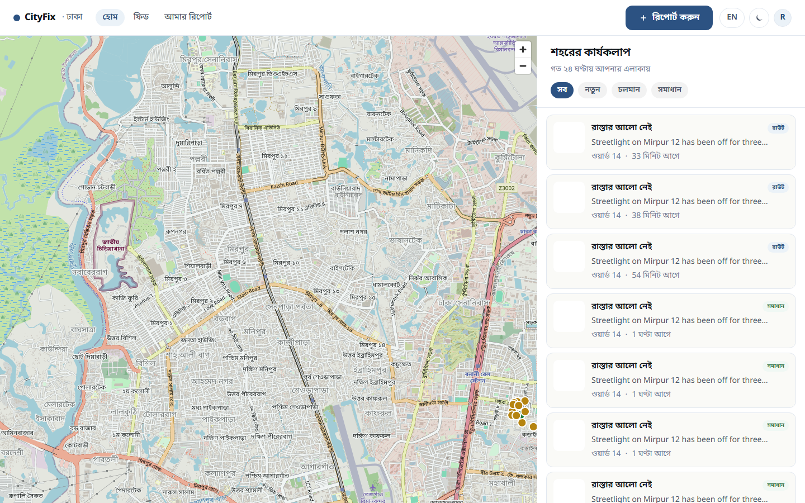
Citizen home — live MapLibre map with real seeded reports
CITIZEN JOURNEY
Report it with a photo and a pin — then watch it move
Category and location are captured with the report; "My reports" is the citizen’s own view of the trail.
CityFix
5
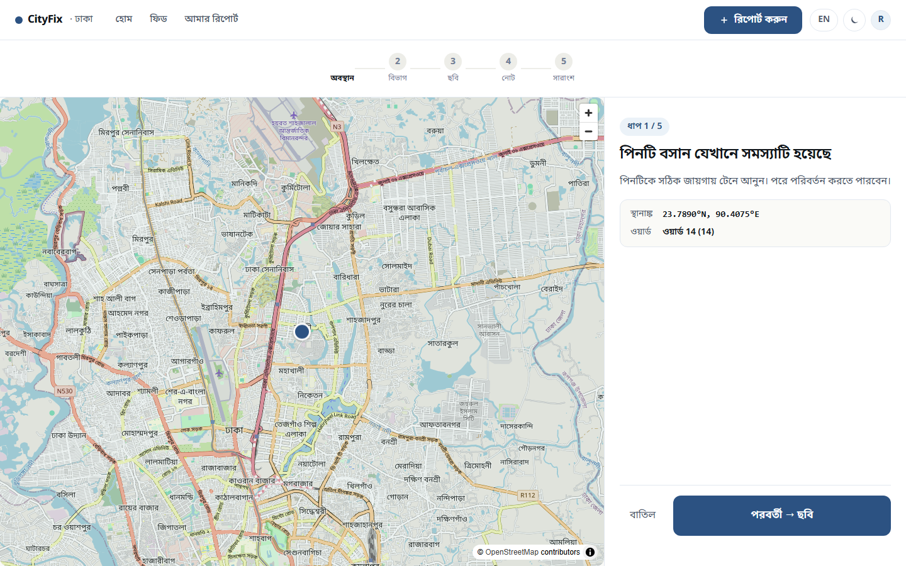
Report flow — category, photo, map pin
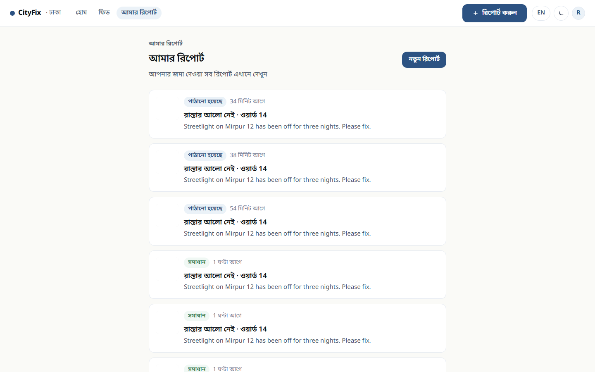
My reports — the citizen’s own trail
DISPATCHER
The triage queue: priority, dedup and assignment in one view
Habib sees every open ticket with its ward, priority badge and assignment state — then routes it.
CityFix
6
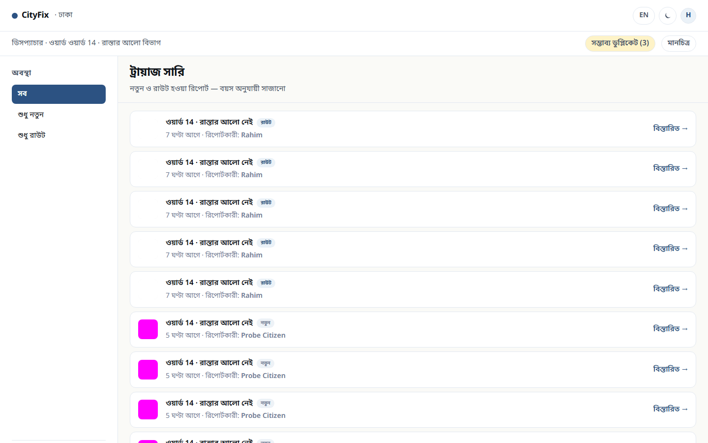
Triage queue — Ward 14, 30 open tickets
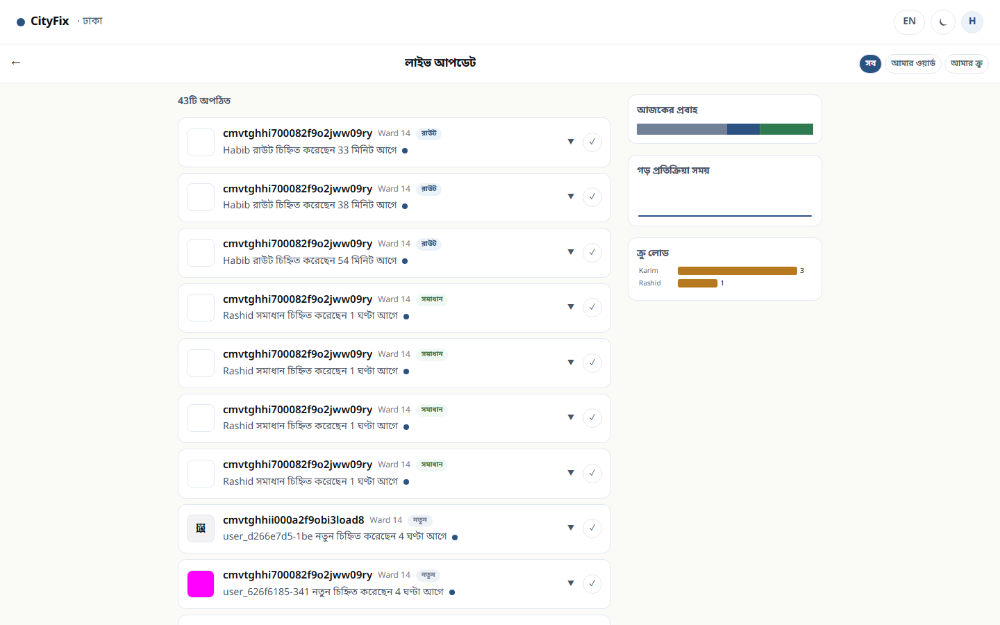
Monitor — live status view
CREW
The field surface: only my ward, only my work
A crew member is not a dispatcher with fewer buttons — the surface is scoped to the assignments they can actually act on.
CityFix
7
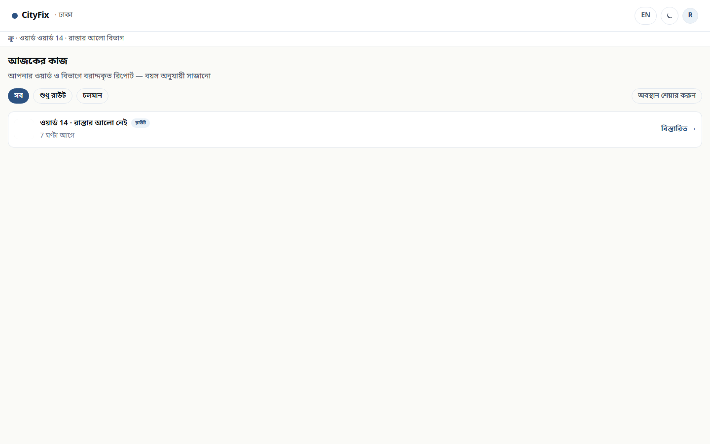
Crew assignments — one open job in Ward 14
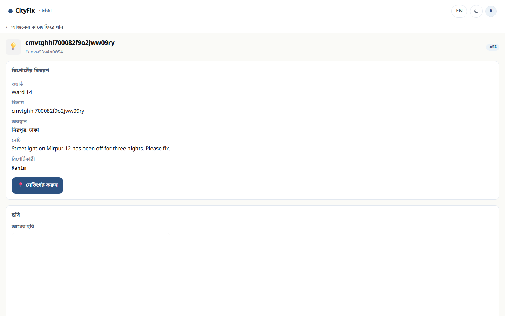
The job itself
Scoped by ward
Rashid works Ward 14 — not the whole city.
Actionable only
The API returns only `routed` and `in_progress`.
Proof required
Resolution needs a photo before the ticket closes.
Role-enforced
The API refuses a crew session on dispatcher routes.
The crew surface is deliberately sparse: it shows work, not everything the city knows about.
ADMIN
The console that governs the platform
Anwar configures the city, watches the ticket estate and reads the audit trail — and every write is WebAuthn-gated.
CityFix
8
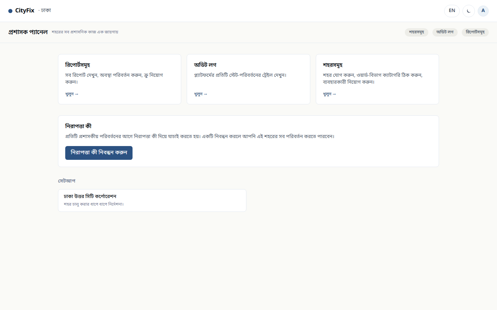
Admin console
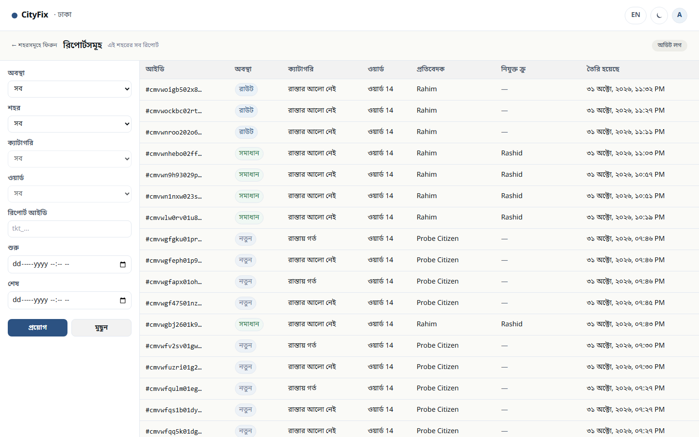
Ticket estate
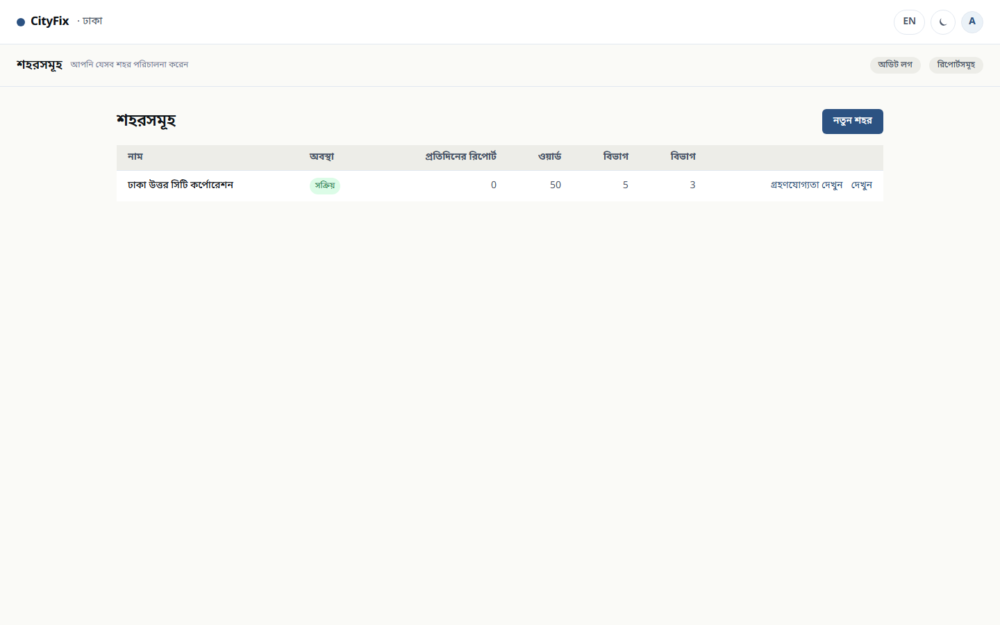
City setup — wards, taxonomy, adoption
Scoped, not global — A city admin governs one city.
WebAuthn on writes — A passkey signs every mutation.
Audit on every change — Who, what, when — recorded.
ADMIN
One design system — light, dark, and public by default
The admin console honours the shared theme system rather than hardcoding a palette, and the public feed shows the city's progress without an account.
CityFix
9
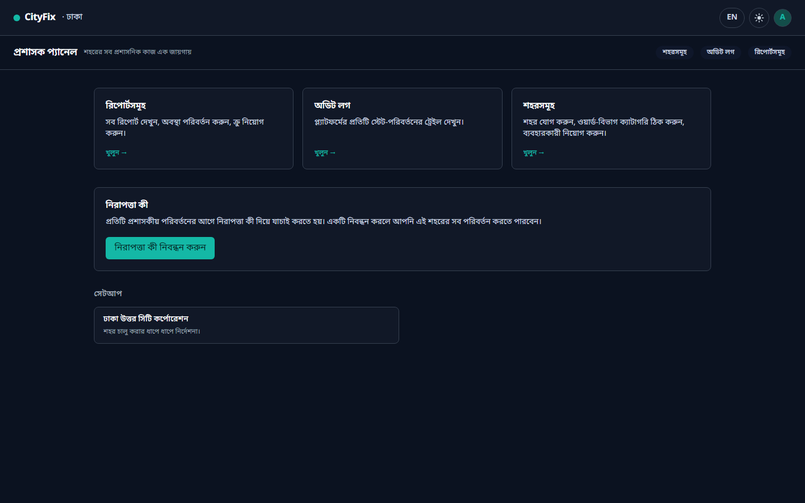
Admin console in dark theme — same design tokens, inverted
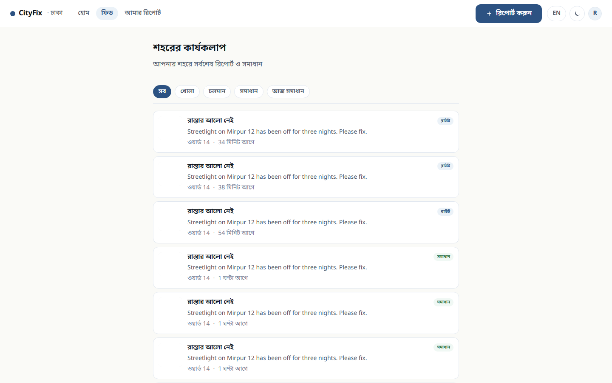
Public activity feed — the city's progress, visible to anyone
UNDER THE HOOD
Architecture
A conventional, deliberately boring stack — chosen for the audit trail it produces, not for novelty.
CityFix
10
Client
• Next.js 14 App Router
• React 18 + TypeScript strict
• Tailwind v3 + CSS custom properties
• MapLibre GL JS + OSM raster
Server
• Route handlers + Zod at every boundary
• Signed HTTP-only session cookies
• Rate limiting + login lockout
• Web Push (VAPID)
Domain
• Service layer returning Result<T, E>
• Ticket transitions + dedup (50 m)
• City / ward / taxonomy model
• WebAuthn for admin writes
Data
• PostgreSQL 16
• Prisma 5 — typed client only
• Raw SQL forbidden in app code
• Platform audit log
Every service-layer call returns Result<T, E> — no exception crosses a boundary, and every state change is written to the audit log.
EVIDENCE
The claims are measured, not asserted
Every number below comes from a command in this repository that runs against the real database.
CityFix
11
1142
unit tests
Vitest — domain, services, auth, serializers
15 / 15
visual baselines
Playwright pixel baselines, gating on merge
45
role & theme specs
Playwright against a live app + Postgres
53 / 53
walkthrough observations
One ticket threaded through all four roles
RECORDED CONSTRUCTION VERIFICATION COMMAND
npx tsc --noEmit && npm run test:unit && npm run test:mockups && curl -fs http://localhost:3000/
WHAT'S NEXT
The pipeline is proven; the city is next
The platform layer, the four-role chain and the audit trail are complete. What remains is deployment and real-world scale.
CityFix
12
DEPLOYMENT
Ship the pilot
Hosting target is still open — Vercel vs Cloudflare vs Railway is the one decision left to ratify.
CITIZEN ONBOARDING
Real SMS provider
The OTP provider is a stub from the platform layer; WO-004 selects and wires the production provider.
INFRASTRUCTURE
Scale the map
OSM raster tiles are dev-grade. Mapbox or a self-hosted tile server is the production path past pilot volume.
GROWTH
More cities
The city / ward / taxonomy model is data-driven from day one — a new city is configuration, not a fork.
Thank you — questions welcome.
cityfix · Next.js 14 · PostgreSQL 16 · Prisma · MapLibre
APPENDIX
Entry points and the public activity feed
Every entry point routes by role: the site root, the splash and a `?next=` deep link all resolve the same way.
CityFix
13
Login
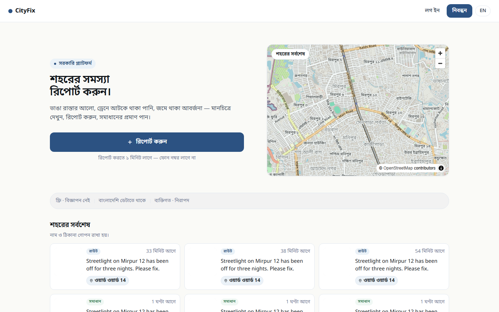
Splash
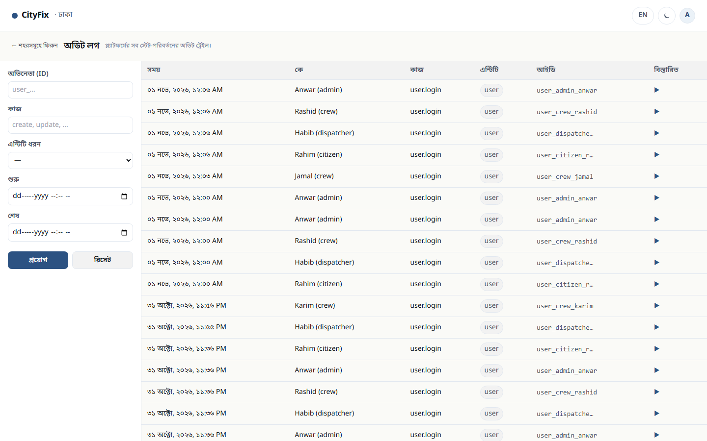
Audit trail